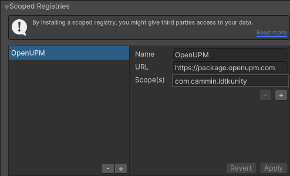
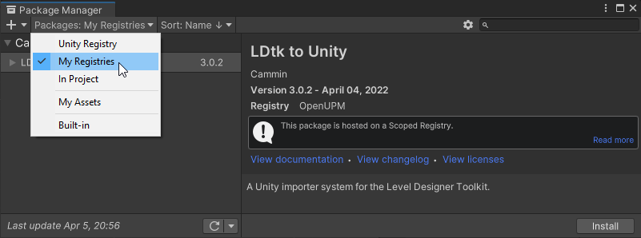

Install
There are a few install methods.
If you have issues, look towards Troubleshooting.
Easy Install
(2019.4+ only)
- In Unity, Go to
Edit > Project Settings > Package Manager - Create a new scoped registry:
- Name:
OpenUPM - URL:
https://package.openupm.com - Scope(s):
com.cammin.ldtkunity
- Name:
- Click Save. Now the importer is listed in the package manager.

- Go to the Unity Package Manager window and select
My Registriesthen select install.

Via .unitypackage
- Download a
.unitypackagefrom the Releases section of the Github repo. - Drag it into Unity to install. It will be installed into your Assets folder, which is particularly useful for ease of code modification
- Use these instead if it's a better option for you. But otherwise, the package manager is still the recommended installation method.
- When installing from a
.unitypackage, ensure that the importer is uninstalled from the package manager (if applicable) - When updating from an old
.unitypackage, ensure that the previous installation is deleted before installing a new one to ensure stability.
Via OpenUPM CLI
- Install the OpenUPM-CLI if not installed already.
- Install the LDtkUnity Package by entering this into the command line while the directory is scoped on the root of your Unity project:
openupm add com.cammin.ldtkunity
This video showcases the OpenUPM CLI installation method.
Note
- Minimum supported Unity version 2019.3.
- This importer includes the Utf8Json library to deserialize LDtk json files.
- To load Aseprite files, install the Unity Aseprite Importer. (Requires Unity 2021.3.15)